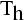
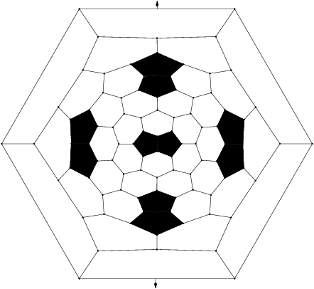
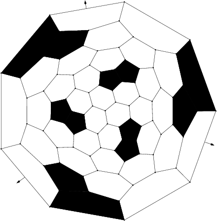

The group 
This is the group formed by all f and -f with f a rotation preserving the regular tetrahedron.
Features
- Algebraic structure: it is the direct product of Alt(4) and of Z2 (24 elements)
- Kind of elements
- 1 element: identity,
- 3 elements: rotation of angle pi going throught pairs of opposite edges of the tetrahedron,
- 8 elements: rotation of angle 2pi/3 or 4pi/3 with axis going throught vertices and opposite faces.
- 1 element: central symmetry,
- 3 elements: plane symmetry defined by pairs of opposite edges
- 8 elements: composition of plane symmetry and of rotation of angle 2pi/3 or 4pi/3
- Examples
- First Fulleren of symmetry :

